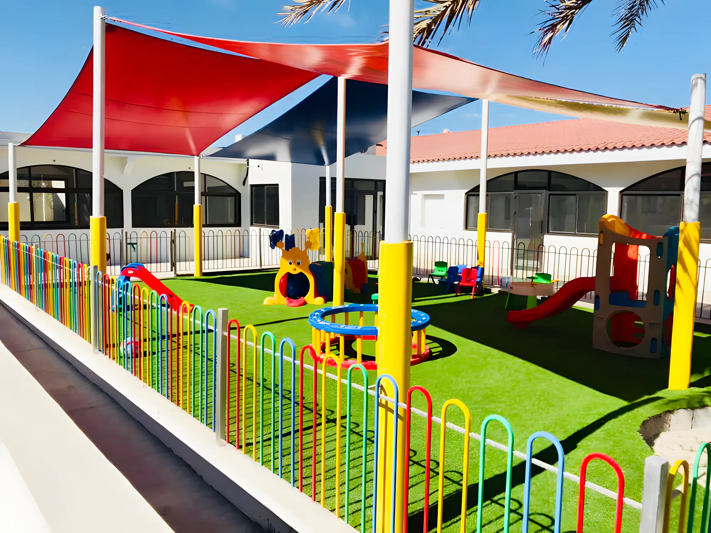

Home / About us
Where childrencome first
We founded Little Wonders as a friendly, loving and child-centred place, where children grow curious, creative and confident, with the option of learning in both English and Arabic.


Our philosophy
Each child gets the chance to discover, question and develop new ideas and skills at their own pace, through Montessori activities and by exploring the world around them, while following the British Early Years Foundation Stage.
Teachers get to know the interests and needs of each child, and of the group, by observing them closely. As children progress, teachers plan topics and carefully introduce new resources and activities. These small steps lead from the very simple to what many parents see as surprisingly complex ideas for their children.
What we want for every child
- A love of learning, through a creative, bilingual curriculum
- Self-awareness, self-confidence and self-esteem
- The habit of always doing their best
- Respect for others and for the environment
- A firm foundation of skills for the next stage of school
- The confidence to explore and discover, for life
- The full potential of each child, throughout their time with us
Our teachers
Every teacher has at least five years' experience and is qualified in Montessori and the Early Years Foundation Stage. All have been trained in the Little Wonders way of teaching, which brings Montessori and Early Years together in a bilingual classroom.
Classes are small, led by fully qualified teachers and supported by specialist teachers and assistants. A low child-to-teacher ratio lets teachers watch each child, understand their interests and strengths, and record their progress through the curriculum.
“Every child is a different kind of flower. All together they make the world a beautiful garden.”
Licensed and registered
Little Wonders Preschool Bahrain W.L.L. is licensed by the Ministry of Labour and Social Development and the Ministry of Industry, Commerce and Tourism.